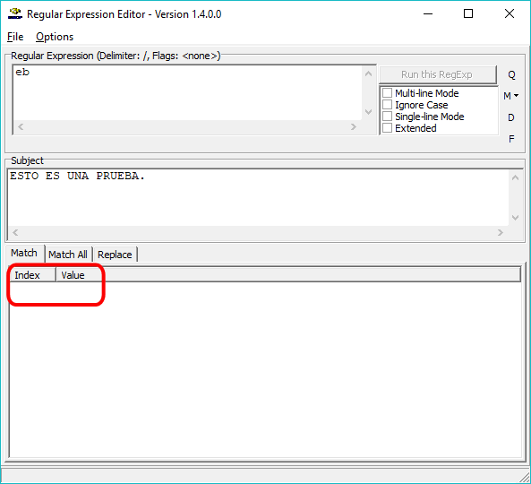
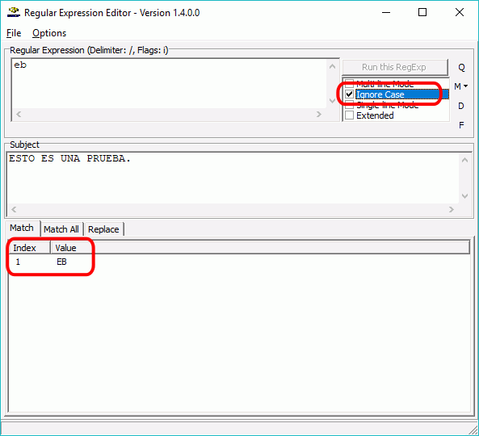

Además de un paquete WAMP como XAMPP y un editor como Eclipse, es conveniente instalar otros programas:
Web Developer
Web Developer es una extensión de Firefox y de Google Chrome con herramientas útiles para el desarrollo de páginas web.
Como extensión de Firefox, Web Developer está incluida en Firefox Add-ons. Actualmente (septiembre de 2016), la versión más reciente es la versión Web Developer 1.2.11, publicada el 18 de agosto de 2016.
Como extensión de Google Chrome, Web Developer está incluida en Chrome Web Store. Actualmente (septiembre de 2015), la versión más reciente es la versión Web Developer 0.4.7, publicada el 21 de julio de 2016.
En cdlibre.org hay una sección dedicada a desarrollo web, desde la que se pueden descargar las últimas versiones disponibles de la extensión para Firefox.
Utilizar Web Developer en Firefox
Para validar en Firefox páginas html, php o css, hay que abrir el menú Herramientas (si no es visible, pulsar la tecla Alt):
páginas html o php:
locales o en servidor local: Herramientas > Web Developer Extension > Tools > Validate Local HTML (Alt+May+L)
en Internet: Herramientas > Web Developer Extension > Tools > Validate HTML (Alt+May+V)
hojas de estilo css:
locales o en servidor local: Herramientas > Web Developer Extension > Tools > Validate Local CSS
en Internet: Herramientas > Web Developer Extension > Tools > Validate CSS
Al validar una página, el validador del W3C mostrará una página con el resultado de la validación:
Si la página es válida mostrará un mensaje en verde:
Si la página es inválida, mostrará un mensaje en rojo y la lista de errores detectados:
A menudo un único error provoca muchos errores en el validador, por lo que se recomienda ir corrigiéndolos uno a uno por orden.
Firebug
Firebug es una extensión de Firefox con herramientas de desarrollo HTML, CSS y JavaScript. Firebug está incluida en Firefox Add-ons, que a veces incluye una versión más actual que la propia página web de Firebug.
Firebug existe desde 2006 y su popularidad promovió la inclusión de herramientas para desarrolladores en los navegadores. En el caso de Firefox, las herramientas de Desarrollador web se introdujeron en Firefox 4 (publicado en marzo de 2011) y han ido adquiriendo muchas de las capacidades de Firebug, por lo que desde 2014 se está trabajando en la unificación de Firebug y las herramientas de Firefox, lo que actualmente (septiembre de 2016) se espera conseguir en Firefox 49.
Actualmente (septiembre de 2016), la versión más reciente es la versión Firebug 2.0.17, publicada el 7 de junio de 2016.
En cdlibre.org hay una sección dedicada a desarrollo web, desde la que se pueden descargar las últimas versiones disponibles.
Editor de texto sin formato
Notepad++ es un editor de texto sin formato que reconoce multitud de sintaxis de lenguajes de programación y permite trabajar con diferentes codificaciones (UTF-8, etc.).
Actualmente (septiembre de 2016), la versión más reciente es la versión Notepad++ 6.9.2, publicada el 18 de mayo de 2016.
Regular Expression Editor es un editor de expresiones regulares.
Actualmente (septiembre de 2016), la página web del programa ya no está disponible (ni siquiera la de la empresa que lo publicó). La última versión publicada fue versión Regular Expression Editor 1.4.0, publicada el 13 de marzo de 2006.
En cdlibre.org hay una sección dedicada a expresiones regulares, desde la que se puede descargar este y otros programas similares.
Utilizar Regular Expression Editor
Regular Expression Editor permite comprobar expresiones regulares compatibles con Perl. La ventana del programa contiene tres cajas de texto:
la caja de texto en la el usuario se escribe el patrón (no hay que escribir los delimitadores)
la caja de texto en la que el usuario escribe la cadena a comparar con el patrón
la caja de texto que muestra el resultado de la comparación
En caso de que la cadena coincida con el patrón, en la caja de texto del resultado se muestra la coincidencia:
En caso de que la cadena no coincida con el patrón, en la caja de texto del resultado no se muestra nada:

Marcando la casilla "Ignore case" es equivalente a incluir el modificador "i" (no distinguir entre mayúsculas y minúsculas).

Editor de archivos .po
Poedit es un programa para la creación y edición de ficheros .po.
Actualmente (septiembre de 2015), la versión libre más reciente es la versión Poedit 1.5.7, publicada el 5 de julio de 2013. Existen versiones posteriores que ya no son libres, aunque siguen siendo gratuitas (con algunas características exclusivas de la versión de pago).
Actualmente (septiembre de 2016), la versión más reciente es la versión MySQL Workbench 6.3.7, publicada el 13 de junio de 2016.
Nota: Anteriormente MySQL ofrecía un programa similar a MySQL Workbench llamado MySQL GUI Tools, que no se desarrolla desde 2009, por lo que no se recomienda su uso.
En cdlibre.org hay una sección dedicada a MySQL, desde la que se puede descargar las últimas versiones disponibles.
Utilidades para SQLite
La extensión de Firefox SQLite Manager permite administrar las bases de datos creadas con SQLite. También se puede descargar de Firefox add-ons.
La última versión disponible actualmente (septiembre de 2016) es la versión SQLite Manager 0.8.3.1, publicada el 28 de febrero de 2015.
En cdlibre.org hay una sección dedicada a Bases de datos, desde la que se puede descargar las últimas versiones disponibles.